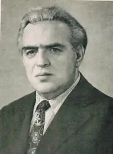
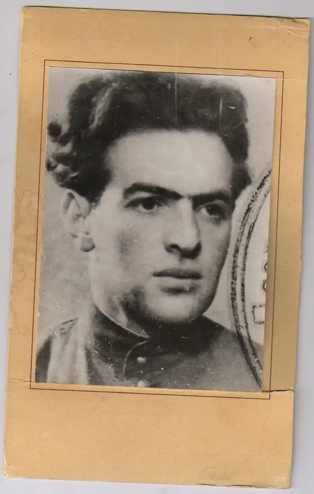

Наум Миронович Тихий ( Наум Миронович Штілерман) народився 25 травня 1920 р. в українсько-єврейському містечку Ємільчино на Житомирщині (нині райцентр Житомирської області) в родині містечкового провізора.
У 1937 р. закінчив десятирічку з відзнакою і був без іспитів прийнятий до Київського університету на відділення української філології. У тому ж році батька Наума Тихого було репресовано, як ворога народу.
Учасник Другої Світової війни. Пішов добровольцем на фронт у липні 1941 р. у складі студентського батальйону. Учасник оборони Києва та Сталінградської битви. Нагороджений орденом Червоної Зірки та медалями. Після демобілізації у 1945 р. повернувся до Київського університету, який закінчив у 1947 р. Жив у місті Києві, працював у видавництві "Радянський письменник", в редакції "Літературної газети". З 1956 року на творчій роботі. Наум Миронович належить до того покоління, яке прийшло в літературу з окопів Другої Світової війни, пережите на війні було для поета найвищою точкою, своєрідним "спостережним пунктом", з якого йому бачився світ. Перша збірка поезій Наума Тихого "Розмова з друзями" вийшла у 1947 році. У тому ж році його було прийнято до Спілки письменників країни. Творчий шлях Наума Тихого поділяється на два етапи. Перший, позначений низкою поетичних збірок і романом "В дорогу виходь на світанні". При всій яскравості образів, високому рівні версифікації, та якості письма, не виходить за рамки традиції соціалістичного реалізму. У ній не можна було обійтись без кількох віршів або поем про великого Сталіна і про будівничих "світлого комуністичного майбуття". 1964 рік — початок принципово нового етапу у творчості Наума.Тихого. Збірка "Колиска на вітрах" — це вже поезія художника-філософа, що за визначенням стоїть вище ідеологічних штампів. Саме глибиною думки, яка напрочуд природно витікає з відчуття, з емоції, позначений доробок Наума Тихого від 1964 р. і до кінця життя. Роман "Рахунок за сонце" (1970 р.) написаний на основі власних фронтових спогадів поета. Проте багато у чому твір є експериментальним для свого часу: за композицією, образними засобами, ритмом прози. Роман Наума Тихого присвячений подіям Другої Світової Війни. Вірш "Молитва за Україну" , в якому злиті воєдино почуття єврея за походженням і українського патріота за способом життя і мислення — можна було б покласти серед перших блоків у фундаменті поліетнічної української політичної нації. У 1995 році вийшла остання збірка творів Наума Мироновича під назвою "Седмиця". Цикл з семи драматичних поем. "Седмиця" — творчий підсумок поета, над яким він працював протягом 20 років: з 1975 до 1995 року. В український літературі до того цим надскладним жанром так масштабно послуговувалася лише Леся Українка у "Лісовій пісні!". В циклі філософських поем Наум Тихий поставив собі за мету втілити своє бачення низки гуманітарних проблем світового розвитку. Особиста й суспільна етика, мораль, культура людського співжиття, міжнаціональні відносини, зокрема, розбрат між народами як джерело катастрофічних загроз, що нині постали перед цілим людством, — ці та інші болісні, нелегко вирішувані питання нашого вселюдського поем, вміщених у "Седмиці". Автор тридцяти поетичних збірок, серед яких "Розмова з друзями", "планетарного сьогодення становлять поетичну й філософську домінанту Листи з гуртожитку", "Будівничі", "Любов і труд" , "Що серце знає", "Колиска на вітрах" , "З усіх доріг" , "Цілую хліб твій", "Будень вічної вулиці", "Будь славен день", "Понад озимим полем", "Щоб не згас вогонь", "Вибране: поезії" , "Смак осіннього вітру". Прозові твори Н. Тихого — романи "В дорогу виходь на світанні" , "Рахунок за сонце" ; нариси тощо. Наум Тихий багато перекладав українською з мов народів СРСР. Особливо великий його внесок у перекладі з ідиш — Давида Гофштейна, Переца Маркіша, Риви Балясної та інших. Уже на схилі літ спілка письменників України за широкої участі громадськості вшанувала Наума Мироновича Тихого. В 1986 році за збірку поезій "Понад озимим полем" поет був удостоєний літературної премії імені Павла Тичини "Чуття єдиної родини". Лейтмотивом проходить крізь вірші філософствування про минуле, майбутнє, роздуми інтимного характеру, занурення у глибини душі. Наум Тихий не цурається української традиції, поєднуючи у своїх творах безліч напрямів, як то неоімпресіонізм, традиціоналізм, символізм. Кожен образ — символ збірки – окремий вивершений концепт, що, поєднуючись із іншими, створює різнобарвний потік непересічної поезії. Наум Тихий помер 27 жовтня 1996 р. Похований на Байковому цвинтарі у Києві. Ідеали духовності, доброта як незамінна ознака повноцінного прожитого життя, історична спадковість поколінь – ось ті орієнтири, які вели автора багатолітнім творчим шляхом.